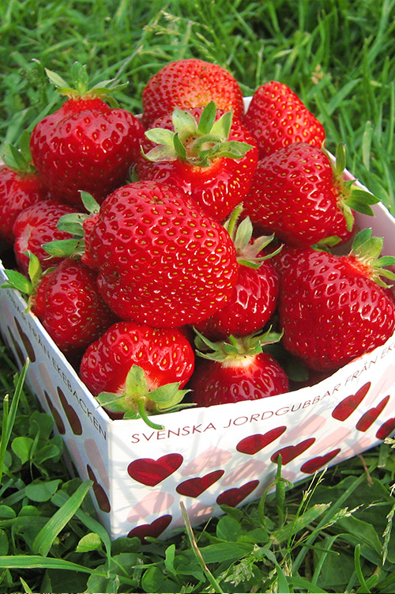
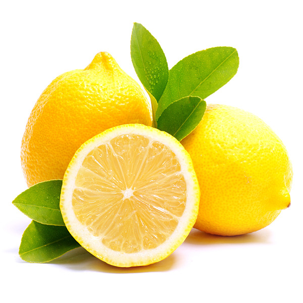
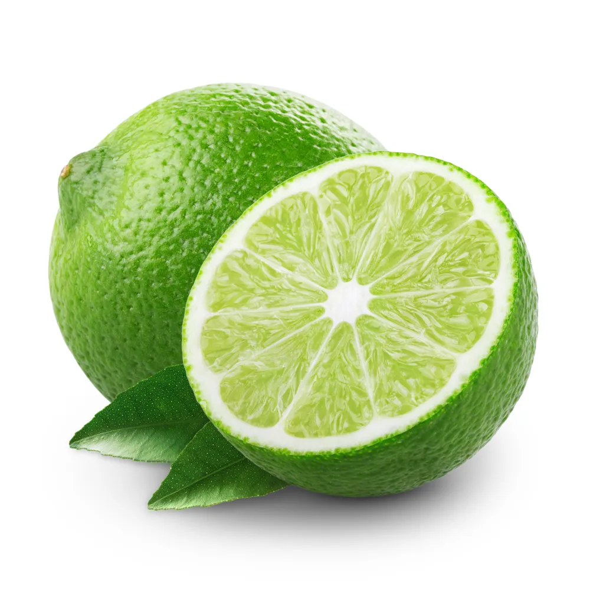
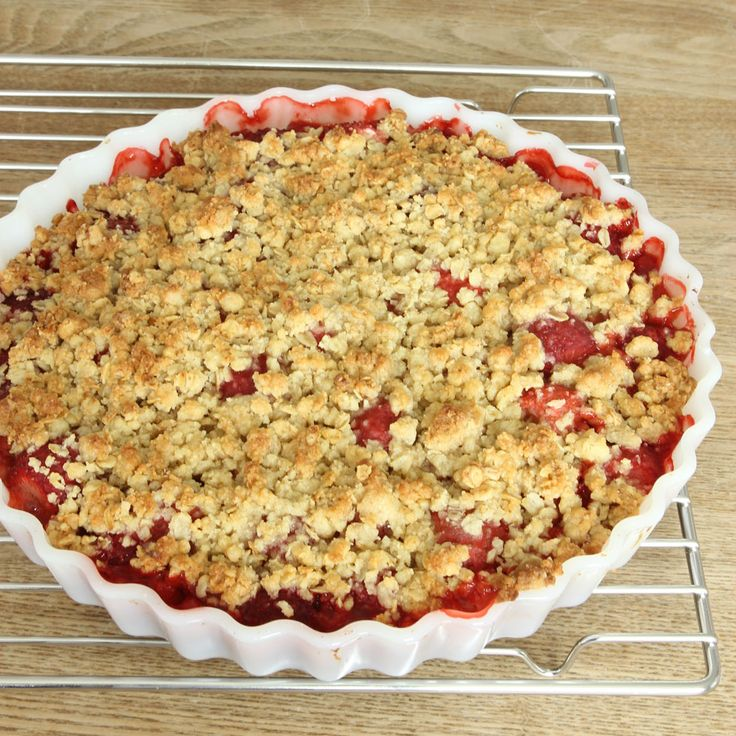

Jordgubbspaj med citron och lime



Till servering
- 2 tsk citronjuice
- vaniljvisp eller glass
Gör så här
- Sätt ugnen på 175°C.
- Smält smöret i en kastrull. Dra av från värmen. Blanda i alla övriga ingredienser utom jordgubbarna.
- Dela jordgubbarna. Lägg dem i en smord pajform (ca 28 cm i diameter). Fördela smeten över
jordgubbarna.
- Ställ in mitt i ugnen 35-40 minuter eller tills pajen är gyllenbrun och knäckig.
